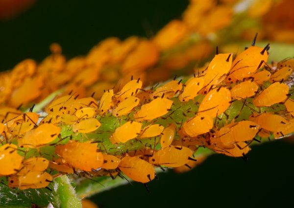

⚠️ INSECTOS "PLAGA" ⚠️

Los insectos plaga 🐛 son aquellos que afectan de forma negativa los cultivos 🌱 al alimentarse de sus hojas 🍃, tallos, raíces o frutos 🍎, disminuyendo la producción y la calidad de las cosechas 📉. En Boyacá, donde la agricultura 🚜 es una de las principales actividades económicas, estos insectos representan un problema ⚠️ porque pueden provocar pérdidas económicas significativas 💸 si no se controlan adecuadamente.
Polilla Guatemalteca de la papa
La Polilla Guatemalteca de la papa (Tecia solanivora) Ataca tubérculos de papa, muy importante en este departamento.

Pulgon
El Pulgon (Aphis spp.) Succionan la savia de muchas plantas (hortalizas y leguminosas) y transmiten virus.
Polilla del repollo
Las "Polillas del
repollo"
( Plutella xylostella)
Daña las hojas de cultivos como repollo, brócoli y coliflor
Mosca Blanca
Las moscas
blancas
(Bemisia tabaci) Ataca hortalizas, fríjol y papa, debilitando la
planta y
transmitiendo enfermedades.